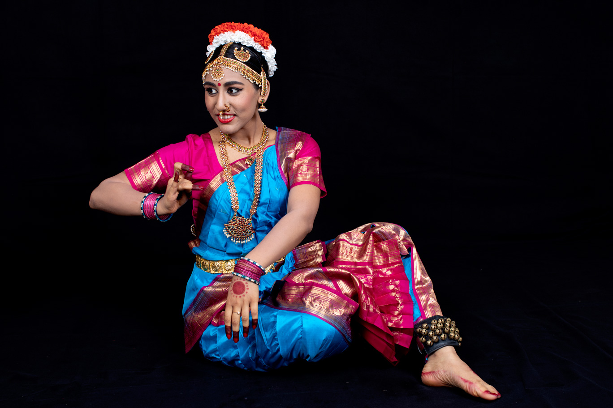

About
About the Teacher:
Smt. Vidya Babu, the artistic director of the Padanjali Foundation, received her training in the Kaatumannarkoil style of Bharatanatyam under the tutelage of Sri Kunjitapadam Pillai. This style of Bharatanatyam is known for its complex footwork and the linear geometry of the adavus (steps) and the detailed expressions.
Vidya has been performing and teaching for over 25 years, and has dedicated herself to advancing this art. Her passion for dance is seen through her inspiring performances and dedication to the art. Vidya’s love for her students is evident in her classes, which are marked by contagious enthusiasm, energy, creative choreography, and innovative teaching techniques.
Vidya is also trained in Carnatic vocal music and has a Master’s degree in English Literature. In Vidya’s words, “Dancing is a holistic experience, and when Bharatanatyam is performed with the mind, body, and soul, it is the highest form of worship. An Arangetram of a dancer us a celebration of the glory of God, the gift of life, and the beauty and joy of movement, Dancing is Divine.”
About the Student:
Divya has been learning Bharatanatyam from Smt. Vidya Babu from the age of six. She has performed onstage at various occasions, including religious festivals at temples, cultural programs across the Chicagoland area, and Padanjali foundation showcases. Divya’s involvement in Bharatnatyam has not only enabled her to connect with her Indian heritage and has pushed her to strive to be a better dancer with each piece she has learned. Over the last 12 years, Divya has grown to love and revere Bharatanatyam.
Divya graduated from Palatine High School in May 2018 as a member of National Honor Society and as an Academic Scholar, the highest academic honor at Palatine High School. Through her high school years, Divya ran cross country and track, she played viola, and was a part of Palatine High School’s Math Team and Science Olympiad. Outside of school and dance, Divya has been learning vocal music for 6 years.
This fall, Divya will begin her pursuit of a Bachelor’s degree in Civil Engineering from Cornell University in Ithaca, New York.